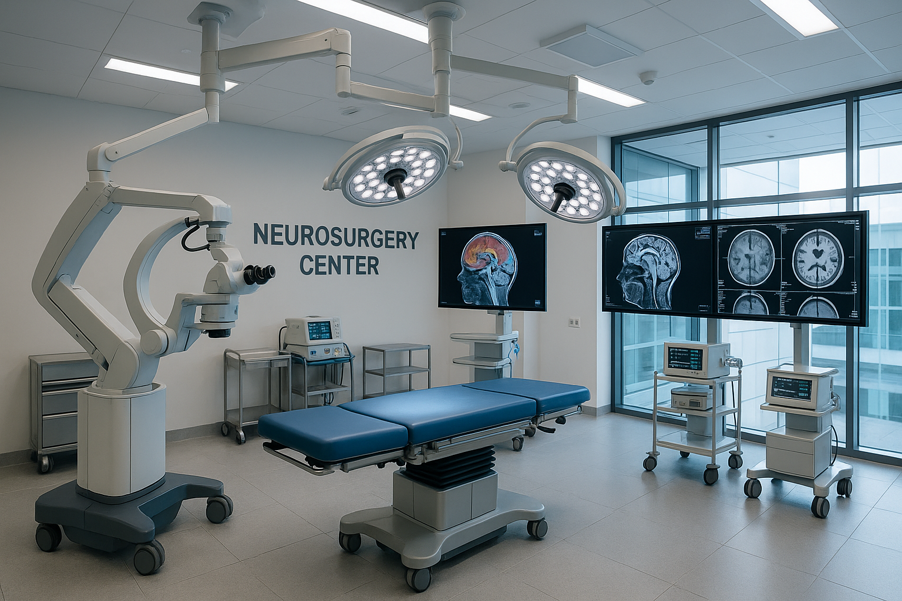
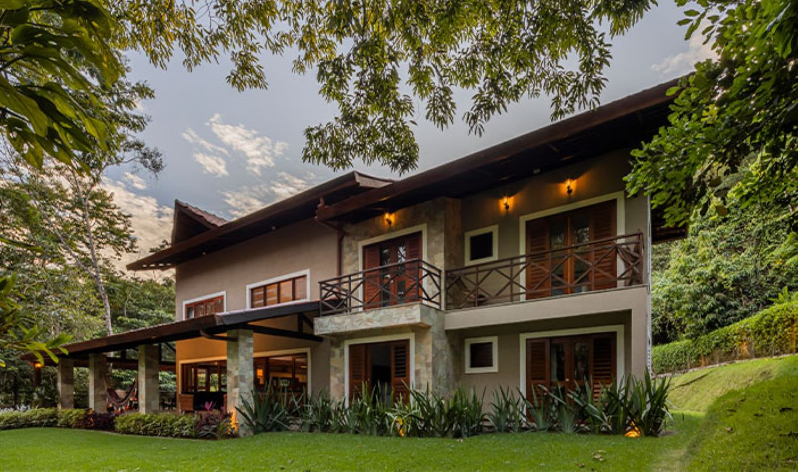
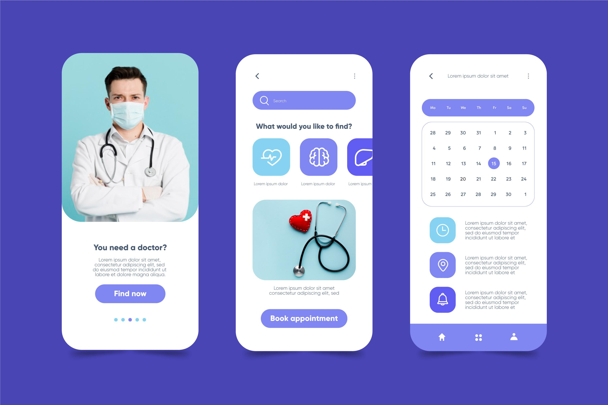

Meus projetos

Criação de um centro especializado em neurocirurgia, ortopedia e fisioterapia
Contamos com uma infraestrutura moderna que inclui salas cirúrgicas equipadas com tecnologia de ponta, UTI dedicada, e um espaço amplo para reabilitação física, onde nossos pacientes têm acesso a recursos inovadores.
Em breve mais informações

Treinamento e capacitação de equipes em neurocirurgia
Implementamos um programa robusto de treinamento contínuo para nossa equipe e profissionais parceiros. Esse programa inclui cursos presenciais e online, workshops práticos e simulações realísticas com o uso de laboratórios especializados, que simulam situações cirúrgicas complexas.
Em breve mais informações

Criação de aplicativo para acompanhamento pós-operatório de pacientes neurocirúrgicos
Desenvolvemos e lançamos um aplicativo móvel exclusivo para o acompanhamento pós-operatório dos nossos pacientes neurocirúrgicos, que tem sido uma ferramenta fundamental para garantir uma recuperação segura e eficaz.
Em breve mais informações